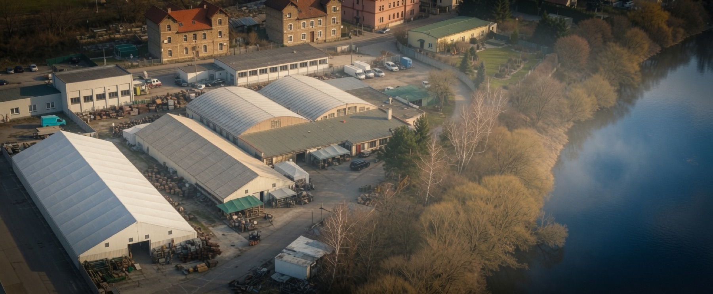
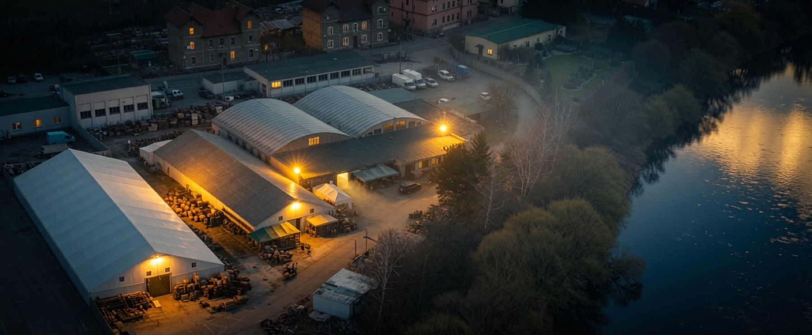

FIP-PROPS s.r.o. is the Czech and EU leader in props for medieval and historical film. For a quarter of a century we have supplied film, television and theatre productions across Europe from one of the largest historical prop collections on the continent — more than 120,000 pieces and growing.
We are the key rental house for brass, copper and pewter, alongside period furniture and lighting, weapons and armour, books and documents, skins, carts and boats, and casino and hotel furnishings — spanning the medieval era through to the modern day.
Our warehouses sit on the bank of the Berounka in Hýskov, in the former Prefa works — roughly twenty-five minutes from Barrandov Studios, at the heart of the Central European production region. Capacity is limited during the busy season, so it's always best to ask in advance about availability for your dates.
Medieval furniture, seating, beds and chests · brass, copper and pewter · glass, porcelain and ceramics · candles, lanterns and lighting · tools, village and craft equipment · books, scrolls and documents · weapons, armour and shields · luggage, trunks and bags · hospital and sanitary props · casino and hotel furnishings · war and military equipment.
A selection from more than forty international productions outfitted from our stores: